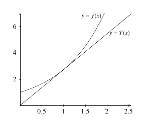
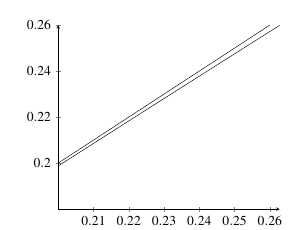

3.10 Linear Approximations and Differentials
Linear Approximation
Linear approximation takes advantage of the fact that values of \(f(x)\) near \(x=a\) lie very close to the tangent line, \(T(x)\) of \(f(x)\) at \(x=a\). With this in mind, if we have a situation in which \(f(a)\) is easy to find and the tangent line to \(f\) at \(a\) is easy to find but values of \(f\) close to \(a\) are difficult to find, then we can approximate them by a linear approximation based on the tangent line.
|  |
|---|
At \(x = a\), the tangent line for \(f(x)\) is given by \[y = f(a) + f^{\prime}(a)(x-a).\] Therefore, for values of \(x\) close \(a\), we know \[f(x) \approx f(a) + f^{\prime}(a)(x-a).\] We call the value \[L(x) = f(a) + f^{\prime}(a)(x-a),\] the linear approximation of \(f\) near \(a\).
Example: Find the linear approximation of \(\sin(x)\) near \(x = 0\) and use it to determine \(\sin(0.25)\).
Solution: The linear approximation to \(f(x) = \sin(x)\) at \(x = 0\) is \[L(x) = f(0) + f^{\prime}(0)(x-0).\] Therefore, we need to determine \(f(0)\) and \(f^{\prime}(0)\). We know that \[f(0) = \sin(0) = 0,\] and that \[f^{\prime}(0) = \cos(x) |_{x=0} = \cos(0) = 1.\] So, the linear approximation of \(f(x) = \sin(x)\) at \(x=0\) is given by \[L(x) = 0 + 1(x-0) = x.\] To approximate \(\sin(0.25)\), we evaluate \(L(0.25) = 0.25 = 0.25\). Note that \(\sin(0.25)\) is actually around \(0.247\) which is quite close.
|  |
|---|
Example: Find the linear approximation of \(\sqrt{x-1}\) near \(x = 2\) and use it to determine \(\sqrt{1.25}\).
Solution: The linear approximation to \(f(x) = \sqrt{x-1}\) at \(x = 2\) is \[L(x) = f(2) + f^{\prime}(2)(x-2).\] Therefore, we need to determine \(f(2)\) and \(f^{\prime}(2)\). We know that \[f(2) = \sqrt{2-1} = \sqrt{1} = 1,\] and that \[f^{\prime}(2) = \dfrac{1}{2\sqrt{x-1}} |_{x=2} = \dfrac{1}{2\sqrt{2-1}} = \dfrac{1}{2}.\] So, the linear approximation of \(f(x) = \sqrt{x}\) at \(x=2\) is given by \[L(x) = 1 + \dfrac{1}{2}(x-2).\] To approximate \(\sqrt{1.25}\), we need to find a close approximation to \(f(2.25)\) since \[f(2.25) = \sqrt{2.25 - 1} = \sqrt{1.25}.\] We therefore evaluate \[L(2.25) 1 + \dfrac{1}{2}(2.25-2) = 1 + \dfrac{1}{2}(0.25) = 1.125.\] We note that the actual value of \(\sqrt{1.25}\) is 1.118, so we are pretty close.
Practice Problems
- Find the linear approximation to the curve at the given point.
- \(y = e^x\) at \(a = 0\)
- \(y = \sqrt{x-2}\) at \(a = 6\)
- \(y = \ln(x)\) at \(a = e\)
- \(y = \cos(x)\) at \(a = \pi\)
- \(y = x^2 + x + 1\) at \(a = 2\)
- \(y = e^{x-3}\) at \(a = 3\)
- Find the linear approximation to the curve at the given point and use it to approximate the given number.
- \(y = e^x\) at \(a = 0\) approx \(\sqrt{e}\)
- \(y = \sqrt{x-2}\) at \(a = 6\) approx \(\sqrt{3.8}\)
- \(y = \ln(x)\) at \(a = e\) approx \(\ln(3)\)
- \(y = \cos(x)\) at \(a = \pi\) approx \(\cos(3.5)\)
- \(p(x) = x^2 + x + 1\) at \(a = 2\) approx \(p(2.25)\)
- \(y = e^{x-3}\) at \(a = 3\) approx \(\sqrt{e}\).
Find the linear approximation to \(\sqrt[4]{x}\) at \(a = 2\). Use it to approximate \(\sqrt[4]{3}\) and \(\sqrt{4}{10}\) and compare to the exact values.\
Use a linear approximation to determine the value of \(e^{0.1}\) without the use of any computational aid.
Differentials
Given a function \(y = f(x)\), we call \(dy\) and \(dx\) differentials and we define the relationship between \(f\) and the differentials is given by \[dy = f^{\prime}(x) dx.\] For example, if \(y = x^2 + x + 3\), the differential for \(f\) is given by \[dy = (2x + 1)dx.\]
Geometrically, \(dy\) represents the vertical distance between \(x\) and \(x + \Delta x\) (or \(x + dx\)) on the tangent line of \(f\) at \(x\). If \(\Delta y\) is the actual change in the vertical distance between \(f(x)\) and \(f(x + \Delta x)\), then \(dy \approx \Delta y\) and as \(\Delta x \rightarrow 0\), this approximation becomes better.
Example: Find the differential of \(y = e^{x^2 - 4}\).
Solution: The differential has the form \[dy = y^{\prime} dx.\] Therefore, the differential for \(y = e^{x^2 - 4}\) is \[dy = \left(2xe^{x^2 -4} \right) dx.\]
Example: Compute \(dy\) and \(\Delta y\) if \(y = \sin(2x + 1)\) as \(x\) changes from \(x=2\) to \(x=2.05\).
Solution: The differential has the form \[dy = y^{\prime} dx.\] Therefore, the differential for \(y = \sin(2x+1)\) is \[dy = \left(2\cos(2x+1) \right) dx.\] So, \[dy = \left(2\cos(2(2)+1) \right)(2.05-2) = 0.02836621855.\] We can find \(\Delta y\) by computing \[\Delta y = \sin(2(2.05)+1) - \sin(2(2)+1) = 0.03310959.\] So, with a small \(\Delta x\), we have \(dy \approx \Delta x\).
Example: A sphere was measured and its radius was found to be 35 inches with a possible error of no more that 0.01 inches. What is the maximum possible error in the volume if we use this value of the radius?
Solution: The equation of the volume of a sphere is given by \[V = \dfrac{4}{3} \pi r^3.\] If we begin with \(r = 35 in\), and assume \(dr \approx \Delta r = 0.01 in\), then \(\Delta V \approx dV\) should give us the maximum error.
The differential here is \[dV = V^{\prime}(r) dr = \left(4 \pi r^2 \right) dr.\] Computing \(dV\), we find \[dV = \left(4 \pi (35)^2 \right) (0.01) = 49\pi in^3.\] Therefore, the maximum error in the volume is approximately 153.938 cubic inches.
Note that this is not a large error as when \(r = 35\) inches, the volume is \(V = 179,594.38\) for a volume comparison of \[\dfrac{153.938}{179,594.38} \times 100 = 0.0857\%.\]
Practice Problems
- Find the differential for each of the given functions
- \(y = \sec(x)\)
- \(y = e^{2x^4 + 1}\)
- \(y = 10^x + \ln(x+4)\)
- \(y = \sin(4x^5 + 1)\)
- \(y = \ln(3x)\cos(5x)\)
- \(y = \dfrac{2^x}{\ln(2x)}\)
Find \(dy\) and \(\Delta y\) for \(y=e^{x^3}\) as \(x\) changes from 2 to 2.05.
Find \(dy\) and \(\Delta y\) for \(y=\sin(x^3)\) as \(x\) changes from 1 to 0.95.
The sides of a cube are found to be \(5 ft\) in length with a possible error of no more than \(1.25 in\). What is the maximum possible error in the volume of the cube if we use this value of the length of the side to compute the volume?
The radius of a sphere is found to be \(18 cm\) in length with a possible error of no more than \(0.05 cm\). What is the maximum possible error in the volume of the sphere if we use this value of the radius to compute the volume?